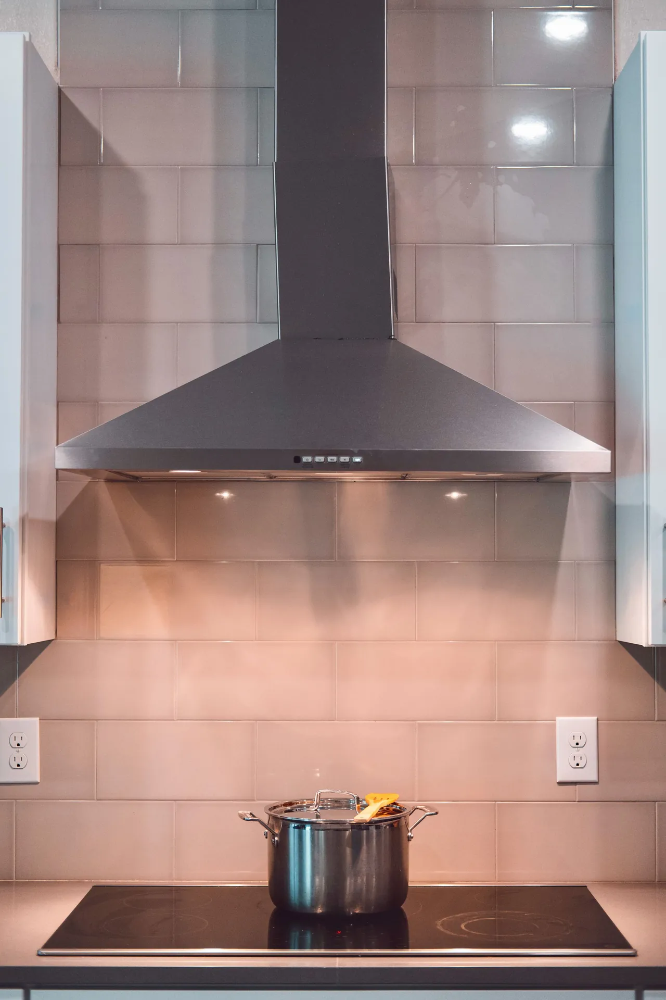

Carpintaria
e montagem
Montamos e transportamos os seus móveis, fazemos peças à medida e recortes, pintamos e reparamos madeira — e instalamos, afinamos e mantemos exaustores.
Móvel de loja que veio numa caixa, uma prateleira que tem de encaixar num vão certo, uma porta que arrasta, um exaustor que puxa mal. A Dizarro trata da parte de madeira e da montagem, do transporte ao acabamento.
O que fazemos
- Montagem de móveis (loja ou projeto) e transporte
- Peças à medida: prateleiras, estantes, bancadas, caixotes
- Recortes e ajustes para canos, tomadas e condutas
- Pintura e envernizamento de madeira
- Reparação de móveis, portas e gavetas
- Instalação, afinação e manutenção de exaustores
Como trabalhamos
Medimos o vão, dizemos o que dá para fazer e o preço, e tratamos do transporte. No fim está montado, a funcionar e limpo.
Exemplo real
Clínica no Grande Porto: móvel em pinho maciço feito à medida para assentar a máquina de laser à altura de trabalho, com portas para arrumar o material.


MontagemMóveis de loja ou de projeto, montados e nivelados.
À medidaPrateleiras, estantes e bancadas para o vão certo.
RecortesPassagens para canos, tomadas e condutas, à medida.
ExaustoresInstalação, troca de tubo e afinação do caudal.

→